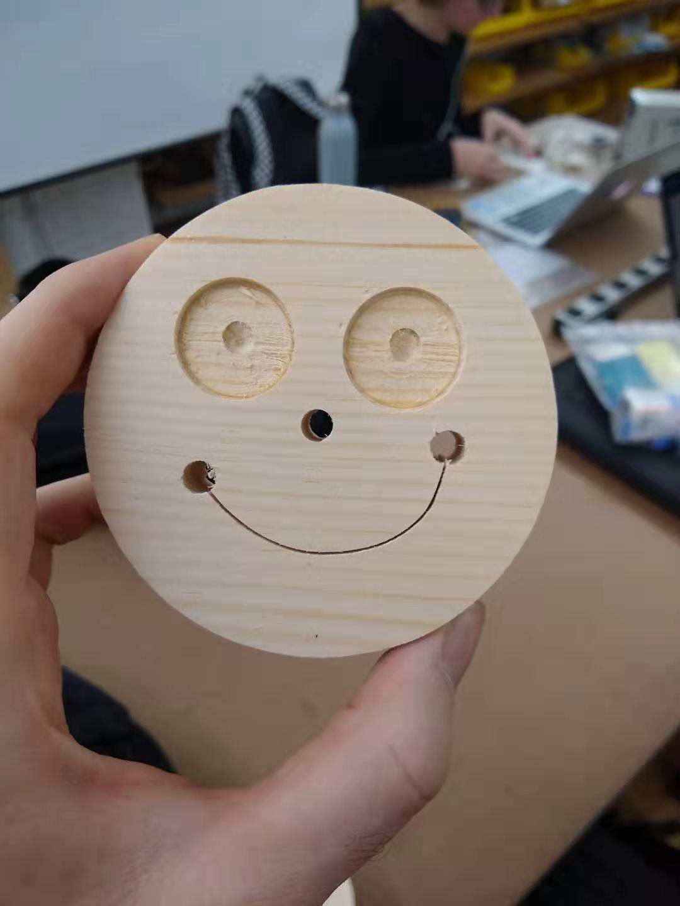

For week one, we were asked to pick an issue we feel strongly about and do some market research on it, including:
1. High level data on why it's important,
2. 3-4 opportunity areas where I intersect with the issue.
I did a bit of brainstorming, and most of my visceral responses to this question revolved around ideas of equality and accessibility, like educational accessibility and workers' rights -- both of these having been issues which affected me personally -- as well as topics like climate change, which we need to deal with or else we'll all die (so, pressing for everyone no matter who you are).
When I sat down and tried to really do a deep dive, though, I decided that the most transformative period in my life was a combination of two factors: getting a remote job right after college, and going abroad to help set up a computer lab for a college for women in Nepal. The idea that I had the ability to physically relocate myself, and so easily too, was something I'd never considered before and which really opened up my perspective on a range of other things, and it's probably, either directly or indirectly, the driving force behind me ending up at ITP. So, it's something I want to explore through UX. Maybe there's something there, maybe not, we'll see.
Market Research
To start this off I looked around at some high-level data for kind of abstract ideas of "people moving", since at the moment my idea isn't defined very well.
Immigration is arguably the most visible and most widely discussed type of movement among people, and though it's a contentious issue and one that's potentially problematic, there's plenty of evidence that immigration is a net good on both the economy and on people's attitudes: here's one link to some data on that.
The European Union is one bloc that's really gone all the way on freedom of movement, as members of the EU are able to live and work in any other EU member state very easily. This link says that people in the EU rank that as their number one achievement, even above peace, single currency and student exchange. The study also says that the policy has, on average, lowered unemployment in the EU by about 6%.
This link shows upward mobility trends among different areas in the US, proof that being able to move really does change things, despite the fact that Americans in the US have a relatively high degree of freedom of movement. Other countries don't have the same degree of freedom of movement; the Hukou system in China makes it very hard to move one's home within the country, for example.
Finally, there's the idea of remote work. In the age of COVID the idea of remote work is more pertinent than ever, and this article discusses whether it's here to stay or not -- there are a lot of benefits such as saving on office space, though there are also some downsides such as less oversight over employees (though is that really a downside).
How I Intersect With This Issue
Remote working is very pertinent to me in particular because a remote job was what I worked from undergrad up until starting at ITP.
Also, I've straight up moved around a lot in my life and I've had to deal with the costs and the benefits of that -- increased opportunities, decreased stability, etc.
Miscellany and Stuff I Thought About While Writing This
So, I realized while investigating the idea of freedom of movement that the concept is tied up with a whole host of other things I find interesting that might also be profitable to explore. I'll present them here and sort them out later.
1. The way that different places brand themselves and construct a picture of identity. Certain countries have done a pretty good job of branding themselves, whether that be figuratively (as in the idea of the American Dream) or literally (Japan, for example, has succeeded in having pretty incredibly distinctive and coherent branding for almost all their products). Also consider something like the Made In China Initiative in China. Cities, states, and other regions also partake in this kind of thing.
2. How we construct an identity for ourselves based on where we began and the places we've been. Do we buy into the idea of a country's branding, or of the American dream? Do we believe in it more when we're away from America or the countries of our origin, when we feel like we need to hold onto something? And how do we make new identities for ourselves based on the tools we're given wherever we end up? More broadly, we need things that help us build our sense of belonging. That's a design issue, since we're designing ourselves. So, how do people use location to design themselves, and how do they change that design based on where they go?
 Comments? Questions? Concerns? Email me
here!
Comments? Questions? Concerns? Email me
here!